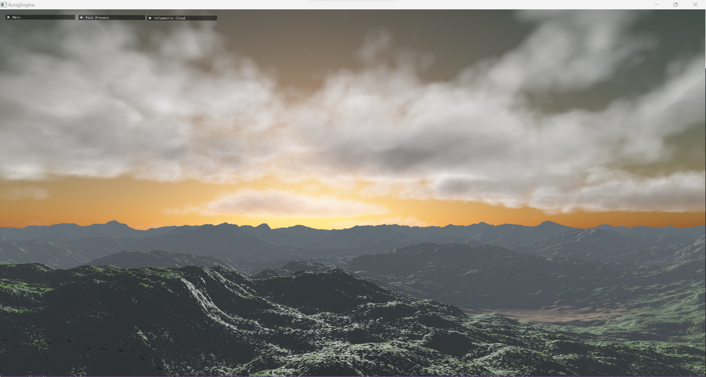
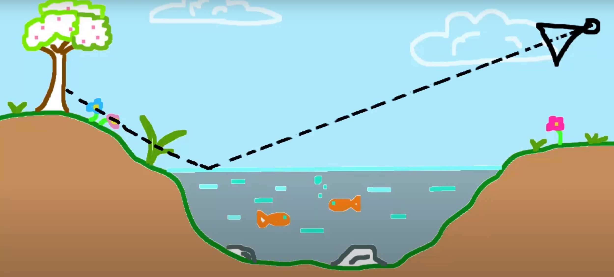
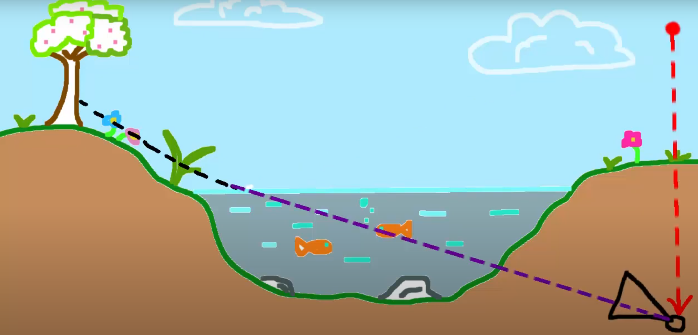
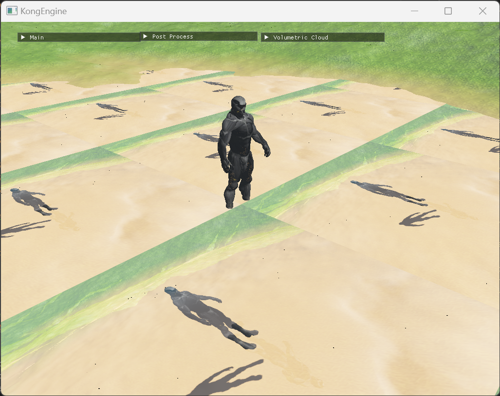
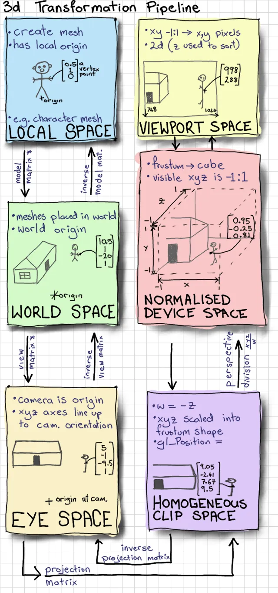
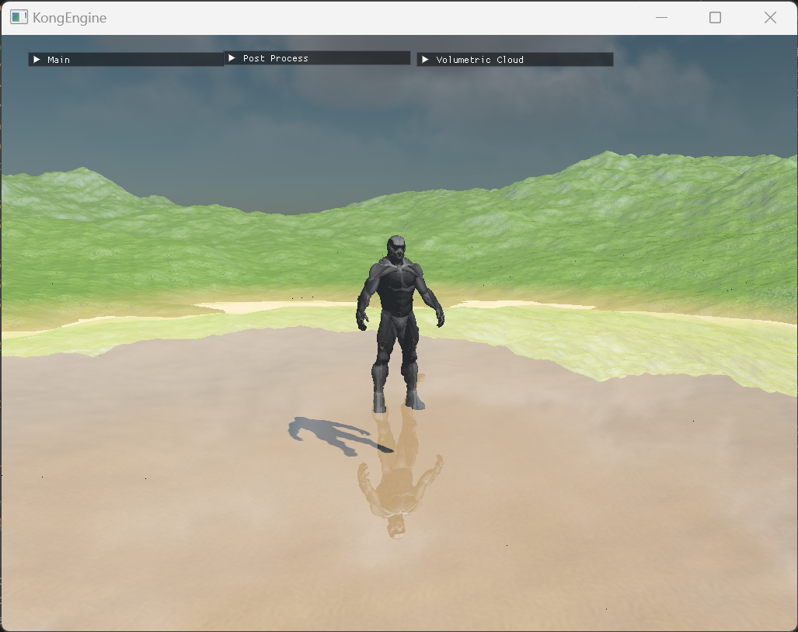
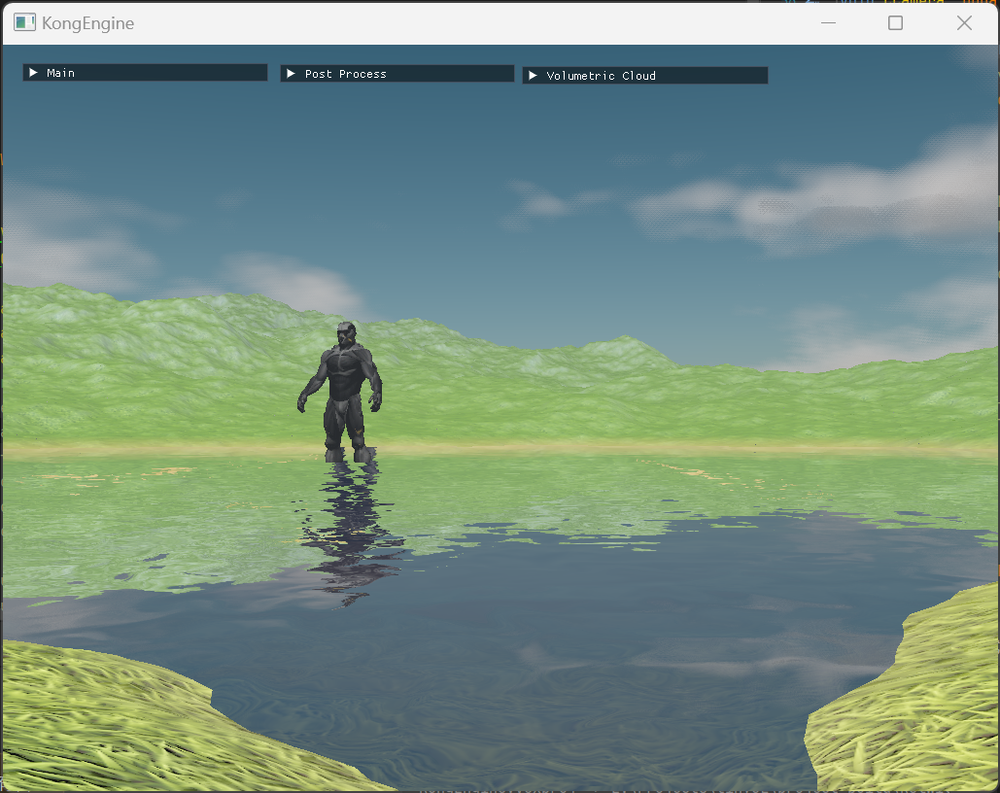

水面效果-1
前言
在经过了逐步的迭代，KongEngine中已经接入了不错的地形和体积云效果（体积云的相关文章我还在整理计划当中，打算后续和IBL连着一起写），所谓好山好水好风光，有了山和云，接下来我的计划便是将水的渲染纳入KongEngine的能力中。

水面的渲染
下面我们来介绍如何实现一个简单的水面渲染效果。
水面渲染的构成
水面的渲染主要由两部分构成：反射和折射，分别对应着水面之上和之下的内容。我在之前已经有文章分享过屏幕空间反射（SSR）的实现细节，但是对于水面来说，反射的范围一般来说是会更大的，包含的内容也会更多。如果仅仅是只能反射屏幕空间的内容的话渲染效果其实并不理想，因此对于水面我们这里使用另外一种方式来实现反射效果。
基础能力
为了实现水面的渲染，需要下面几个基础能力的帮助。
帧缓冲对象（Framebuffer Objects）
在实现前面的很多渲染效果的过程中，我们多次使用了帧缓冲对象，应该对这个很了解了。我们使用的延迟渲染技术就和帧缓冲对象是分不开的。
如果不熟悉这个的同学可以去翻看一下前面的文章，简单的来说帧缓冲对象能让我们将场景内容渲染到它上面，经过处理后再输出到屏幕。
为了实现水面的反射和折射，我们需要两个FBO来分别存储反射和折射的纹理。由于KongEngine使用了延迟渲染的架构（包括地形我已经将它的渲染改为支持延迟渲染了），因此目前折射的纹理我直接使用的是延迟渲染的FBO，当然其实这并不是最准确的，至于为什么我将会在下面的部分解释。
为了表现反射，我们假定原来的场景如下图所示。

右侧的相机向左边看去，它的视线和水面相交的时地方，反射的内容会需要呈现岸上的场景。那么我们应该如何获取到岸上的景色呢，很简单，根据视线的方向和水面的法线，我们可以计算出反射向量，而这个向量相当于将相机按照水平面镜像的结果，如下图所示。

用镜像相机得到的渲染得出的纹理作为水面反射的内容表现。
裁切平面
水面的反射用来表现水面之上的场景，水面的折射用于表现水面只下的场景。那么理论上来说我按照上面所述的方法渲染反射，很有可能会包含到水下的内容，这样反射的纹理就不对了。
因此在渲染反射和折射的内容时需要利用裁切平面，分别将水面之下和水面之上的内容裁切掉。
在OpenGL中，可以使用Clip Distance来实现这个功能，首先需要在C++中启用。
1 | glEnable(GL_CLIP_DISTANCE0) |
在vertex shader中里面，通过改变*gl_ClipDistance[0]*的值来告诉opengl哪些顶点是要被裁切掉的。当gl_ClipDistance[0]的值小于0，表明这个顶点需要被裁切掉；相反，大于0则代表该顶点需要保留。
在KongEngine的实现中，由于直接使用了延迟渲染的帧缓冲内容，所以这里并没有做平面裁切，因此折射和反射的表现其实会有一些问题。
投影纹理映射
当我们有了水面的反射和折射的纹理后，我们接下来将这两张纹理应用于水面上就可以了。。。吗？

上面这张图，nanosuit的脚底下本来是水面的，现在这个表现是因为直接将纹理按照水平面四边形（Quad）的纹理坐标贴了上去。为了得到正确的结果，我们需要用投影纹理映射将水面模型的3D的坐标映射到屏幕的2D坐标上。

上面是一张来自Anton Gerdelan的关于坐标系转换的图示。我们需要以水面模型的屏幕空间的坐标来采样纹理，在vertex shader里面，水面的模型顶点已经经过了转换到达了齐次裁切空间（Homogeneous Clip Space）。
1 |
|
其中clip_space是水面顶点的eye space坐标，将会输入到fragment shader中。
我们需要通过以下步骤获得屏幕空间的采样坐标：
-
将坐标从齐次裁切空间转换到标准设备空间（Normalized Device Space）
- 转换的方法是将x、y的坐标除以w。
-
将坐标从标准设备空间转换到采样空间，也就是屏幕空间
- 需要将坐标的范围从[-1,1]映射到[0,1]，方法就是对坐标乘以0.5后再加0.5。
下面是fragment shader的示例代码。
1 |
|
得到的结果如下图所示。

结语
至此，其实我们已经初步实现了水面的效果了。从上面的效果图来看其实也颇有模有样，但是距离真正的结束还差的远呢。在后面的文章我会继续补充水面渲染的内容，最终我们的效果会如下图一般。

如何实现这个效果就敬请期待后续的内容了。
参考资料